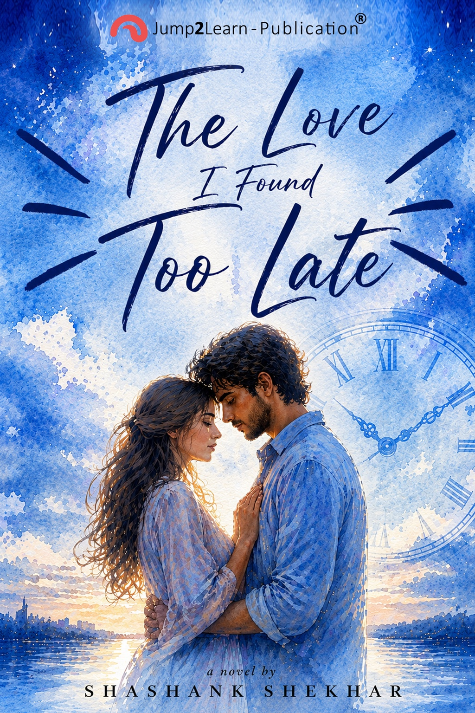
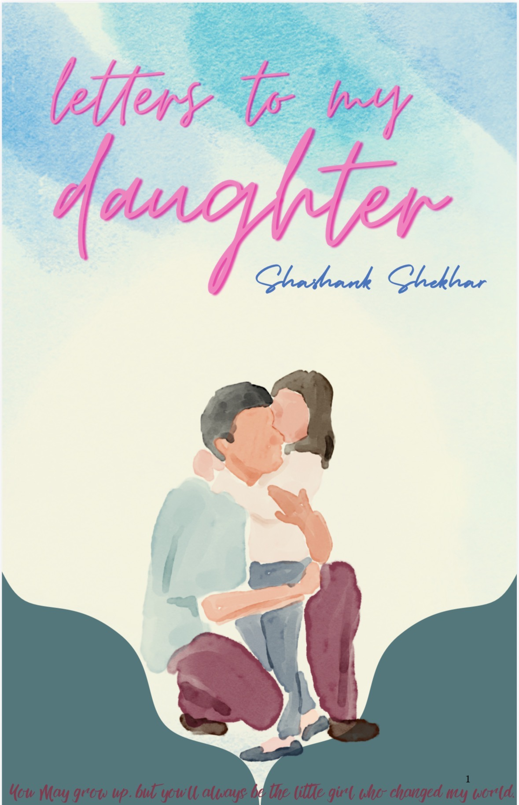

PUBLISHED • BOOK ONEI Found My Love
I Found My Love
Too Late
A story about love, timing, choices and the feelings we sometimes understand only when it is almost too late.
Razorpay checkout will be connected here.
Welcome to NarrativesByShashank — stories of love, choices, memories, second chances and the emotions that stay long after the last page.

Shashank Shekhar is an author, creative thinker and storyteller who finds inspiration in relationships, everyday moments and the emotions hidden between the lines.
With an MBA from NMIMS and experience in the corporate world, his professional journey exists alongside a lasting love for writing and creative expression.
NarrativesByShashank is his home for books, stories, reflections and the journeys behind them.
Connect with the author →Stories built around the moments that change us.
A story about love, timing, choices and the feelings we sometimes understand only when it is almost too late.
Razorpay checkout will be connected here.
Some love stories don't end. They find their way back.

A tender collection of words, memories and hopes written for a daughter who changes a father's world.
Follow this project →Every person carries moments that never become conversations. Sometimes those are the stories worth writing.
Love can be real and still arrive at the wrong moment. Or perhaps timing is simply another chapter.
Ideas, inspirations and little details that become characters, scenes and chapters.
“A beautiful place for stories that feel personal and close to the heart.”— Reader review space
“The books promise emotion, romance and questions that stay with you.”— Reader review space
“I love discovering the story behind the story.”— Reader review space
Your real reader reviews can be added here.
For reader messages, collaborations, media or book enquiries.
hello@narrativesbyshashank.co.in@NarrativesByShashank